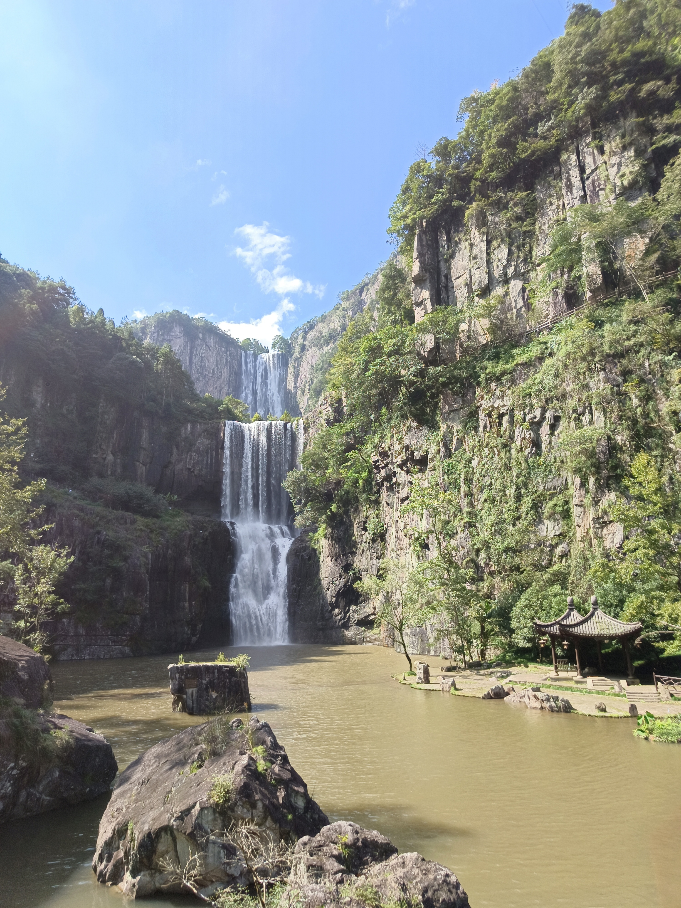

百丈漈位于浙江省温州市文成县，是国家AAAA级旅游景区，以其壮观的瀑布群闻名于世。景区内的百丈漈瀑布总落差达287米，被誉为"中国第一高瀑"。
整个瀑布群由三漈组成，一漈高207米，二漈高68米，三漈高12米。各漈形态各异，一漈如银河倒泻，气势磅礴；二漈如珠帘垂地，晶莹剔透；三漈如仙女散花，轻盈飘逸。
百丈漈不仅自然风光秀丽，还蕴含着丰富的历史文化。这里是明朝开国元勋刘伯温的故里，景区内有刘基庙、刘基墓等历史遗迹，吸引了众多游客前来观光旅游。
聆听古老的传说，感受大自然的神秘力量
传说在很久很久以前，东海龙王的小女儿被百丈漈的美景所吸引，常常化作人形来到这里游玩。一天，她遇到了一位勤劳善良的年轻樵夫，两人一见钟情，私定终身。
龙王得知此事后大怒，派天兵天将将龙女抓回龙宫，并施法将百丈漈的水源断绝。为了拯救心爱的人和百丈漈的百姓，樵夫历尽艰辛，终于感动了上苍。上苍派来神仙，劈开巨石，引来了水源，形成了如今的百丈漈瀑布。
而龙女和樵夫也被允许每年的七夕节在瀑布前相聚一次，这就是百丈漈"情人瀑"的由来。
明朝开国元勋刘伯温年少时曾在百丈漈附近的南田书院求学。相传他经常到瀑布下读书思考，瀑布的磅礴气势和灵动之美激发了他的灵感和智慧。
一天，刘伯温在瀑布下遇到一位白发苍苍的老者，老者送给他一本天书，并告诉他这本书将帮助他成就一番大业。刘伯温得到天书后，刻苦研读，终于成为了朱元璋的重要谋士，助其建立了明朝。
人们相信，刘伯温的智慧和谋略与百丈漈的山水灵气密不可分。至今，百丈漈仍保留着许多与刘伯温有关的遗迹和传说，吸引着无数游客前来探寻。
当地百姓相信，百丈漈瀑布中住着一位瀑布神，掌管着这里的水源和气候。每年农历正月十五，村民们都会举行盛大的祭祀活动，祈求瀑布神保佑风调雨顺、五谷丰登。
传说中，瀑布神非常善良，但也很严厉。如果有人在瀑布附近做出不尊重自然的行为，就会受到瀑布神的惩罚。因此，当地百姓一直保持着敬畏自然的传统。
在百丈漈二漈的旁边，有一块形似青蛙的巨石，被称为"石蛙守瀑"。传说这只石蛙是天上的神仙派来守护百丈漈的，它已经在这里守护了数千年。
每当有邪恶的力量试图破坏百丈漈的宁静时，石蛙就会发出震耳欲聋的叫声，吓跑邪恶势力。因此，当地百姓认为石蛙是百丈漈的守护神，对它十分崇敬。
每当阳光明媚的日子，百丈漈瀑布前常常会出现美丽的彩虹。当地人相信，这是彩虹仙子在瀑布前跳舞。彩虹仙子是幸福和吉祥的象征，她的出现预示着美好的事情即将发生。
传说中，彩虹仙子非常喜欢百丈漈的美景，经常在这里停留。如果有人在彩虹出现时许下心愿，彩虹仙子就会听到并帮助他们实现愿望。因此，许多游客来到百丈漈，都希望能看到彩虹，许下自己的美好愿望。